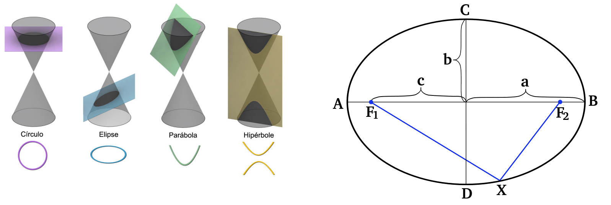
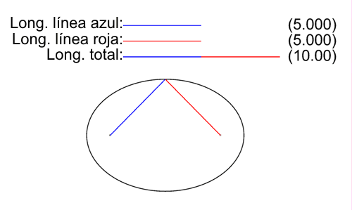
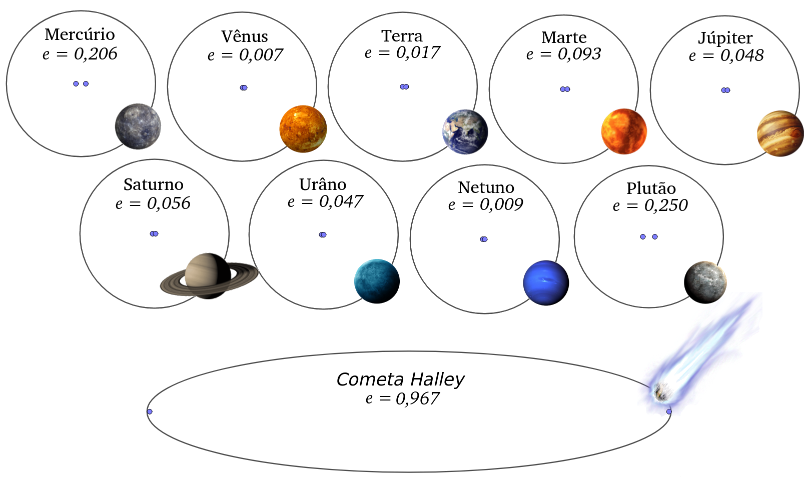
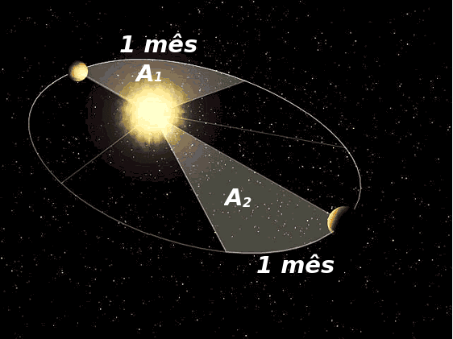
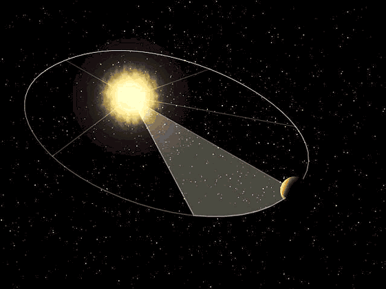
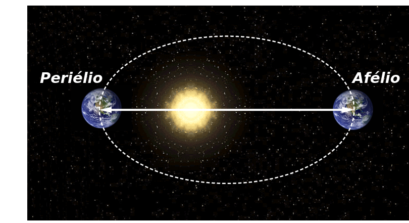
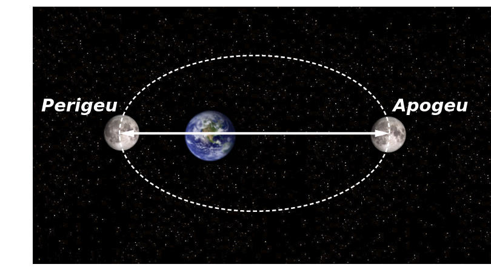
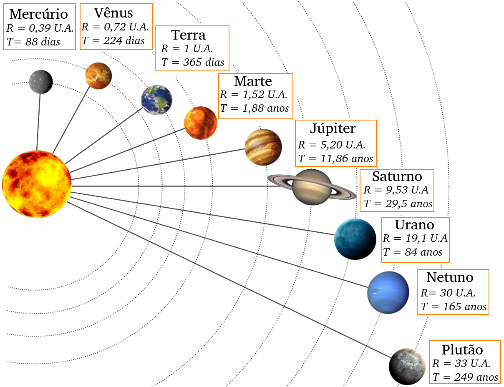

Aula3-27: Leis de Kepler
Primeira lei de Kepler (lei das elipses)
Enunciado:
Todos os planetas do sistema solar movem-se em órbitas elípticas, tendo o Sol como um dos focos.
⚛ ELIPSE:
A elipse é uma das seções cônicas.

|
Podemos defini-la mais rigorosamente como o objeto geométrico formado pelo conjunto de pontos cuja soma das distâncias aos focos é sempre constante. Isso significa que, como mostra a figura acima, a soma dos segmentos de reta F1X e F2X é constante, e esse valor determina a posição de todos os pontos que formam a elipse. A elipse é, em suma, uma “circunferência achatada”. Podemos medir esse “achatamento” pela razão entre a metade da distância focal (c) e o semieixo maior (a), obtendo a chamada excentricidade (e). O valor obtido varia de 0 a 1: quanto mais próximo de 1, mais “achatada” é a elipse. As elipses que compõem as órbitas dos planetas do sistema solar possuem excentricidades próximas a 0, como indicado na figura abaixo. |
 |

Segunda lei de Kepler (lei das áreas)
Enunciado:
Na revolução dos planetas, áreas iguais são “varridas” em intervalos de tempo iguais. Em outras palavras, a velocidade areolar é constante.
A velocidade areolar é dada por:
A figura ao lado ilustra a segunda lei. Observe que, como consequência dela, a velocidade escalar do planeta está em constante mudança. Analisando a imagem, é possível constatar que a velocidade escalar do planeta ao percorrer a área a1 é maior do que a velocidade com que percorre a área a2, pois, apesar de as áreas serem iguais, as distâncias percorridas não o são.
 |
 |
No sistema Terra-Sol, há duas posições que o planeta Terra pode ocupar e que recebem nomes específicos:

Periélio: é o nome dado à posição de maior aproximação entre a Terra e o Sol.
Afélio: é o nome dado à posição em que a Terra se encontra o mais afastada possível do Sol. Generalizando a análise da figura anterior, podemos concluir que o planeta se move de modo acelerado à medida que se aproxima do periélio e passa a ter movimento retardado ao se aproximar do afélio.
No sistema Terra-Lua, há duas posições que a Lua pode ocupar e que recebem nomes específicos:

Perigeu: é o nome dado à posição de maior aproximação entre a Lua e a Terra.
Apogeu: é o nome dado à posição em que a Lua se encontra o mais afastada possível da Terra.
Terceira lei de Kepler (lei dos períodos)
Enunciado
A razão entre o quadrado do período orbital de um planeta e o cubo do semieixo maior da elipse orbital é igual a um valor constante, a constante de Kepler (k).
Após analisar essa lei, podemos concluir que, como consequência dela, os planetas que orbitam em elipses “menores” completam suas revoluções mais rapidamente do que aqueles que percorrem elipses “maiores”.
